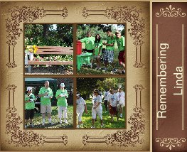

“I am always doing that which I cannot do, in order that I may learn how to do it.”
― Pablo Picasso
It seemed like an Impossible dream for a little girl growing up in India! For as long as I can remember I have wanted to go to Greece, the land of centaurs, gods and goddesses, of heroes and monsters. Yet most of the adults I grew up around seemed to think it was a fanciful dream that was doomed to die.
But to a little girl with stars in her eyes and a fertile imagination…I was already there! I had no money, no directions, no benefactors to help me..in fact no way of knowing at age 6 , how I would get there …all I knew was it was a real place on a real map and that it was very possible to get there, even if I had to walk all the way there.
But I took the little stretches towards my dream in the ways I could. I learnt basic tourist phrases in Greek, I learnt how to cook Greek food and i was obsessed by its architecture, philosophers and history so the pursuit of my dream , fanciful though it appeared to others, was a very real thing to me.
Each time I stretched myself a little in the direction of my dream, I grew by leaps and bounds! I had no idea at that time that my Journey to Greece would cause me to stretch and grow in ways that would affect my life and career in ways that most people only dream about. Read More→
I remember my mother’s prayers and they have always followed me. They have clung to me all my life. ~Abraham Lincoln
And God said let there be woman – and she will be your mother and your best friend!
Nothing compares to the pure love and true friendship that is provided by a mother for her child.
Not even when the child spurns her, or goes forth into adulthood without a backward glance at the many tears and sacrifices that have been made in exchange for their success and happiness in life.
We have all been blessed with having been born to a mother.
I have been twice blessed – once to have had the perfect friend in my own mother who passed on too early and once again to enjoy the bonds of deep affection and laughter with my mother in law.
Both born on different continents, but both with a strong faith , a great sense of humour and the simplicity of a wisdom that is led from the heart. Read More→
I think dogs are the most amazing creatures. They give unconditional love. For me they are the role model for being alive. Gilda Radner
Nothing quite prepared us for our first Christmas with Ginger. Those of you who have been following our blog know that Ginger, our little cocker spaniel entered our lives rather dramatically last Spring. Like the proverbial guest who came to dinner, she stayed and became part of our family and captured our hearts in very short order.
The transition from perplexed pup, quite bewildered at having been suddenly beamed into the home of relative strangers to beloved and inseparable member of the family, happened relatively quickly .
But the subtle lessons in life she taught us , came to us like the gift of the Magi at Christmas time.
I call this the Eat, Pray, Love formula of Gingers existence.Read More→
Until one has loved an animal, a part of one’s soul remains unawakened. – Anatole France
A warm Sunday in October at the beginning of Autumn. There is a cool breeze languidly blowing the fallen leaves in the church yard and surrounding woods. We are among the first to arrive with our little cocker spaniel Ginger in tow, for the Blessing of the Animals – an annual event at our church held on the first Sunday in October around the feast of St. Francis of Assissi. Read More→
August 14th,2010 dawned clear and bright, and the sun shone gently on St. Bonaventure’s church and a community with heart who had gathered together to pay homage to a woman of great love and an exceptional life who became a symbol of unity to hearts moved by love.
Linda was a professional and beloved wife and mother of three children. Like many adults who think they are invincible, she was suddenly and mysteriously taken over by schizophrenia and heard voices that no one else could. Only she recognized and understood those voices – some were the whispers of loved ones, others were persistent murmuring voices that began to drive her away from her home and onto the streets of Don Mills.
Linda made her new home on a bench in our community. Lots of kind members of the community remember her with kindness and love – the children who ran to share their lunch with her, the generous parents who gave her money to help support her. We cared deeply about Linda as did her grateful family.
There were others though, who viewed her with less than loving feelings. They deemed her a nuisance, did not like her presence in “their” park and vociferously pleaded with the city to take her bench away. Linda was forced to move on to other benches and less sympathetic neighbourhoods and eventually died alone and friendless on the streets of North York, outside a gas station where nobody cast a sideways glance at her pitiful plight. Read More→
 It seemed like an Impossible dream for a little girl growing up in India! For as long as I can remember I have wanted to go to Greece, the land of centaurs, gods and goddesses, of heroes and monsters. Yet most of the adults I grew up around seemed to think it was a fanciful dream that was doomed to die.
It seemed like an Impossible dream for a little girl growing up in India! For as long as I can remember I have wanted to go to Greece, the land of centaurs, gods and goddesses, of heroes and monsters. Yet most of the adults I grew up around seemed to think it was a fanciful dream that was doomed to die.
{kind=link}
{kind=link}
{kind=link}
{kind=link}